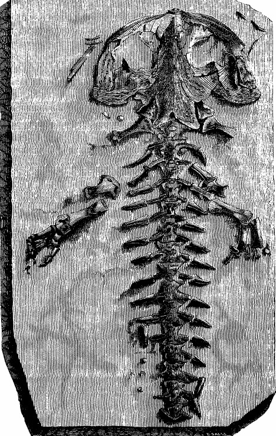

Tính hiếu kỳ của con người mới vô biên làm sao. Lời tuyên bố của người có thẩm quyền cao nhất đương thời về bò sát, Giáo sư J. W. Hopkins (Đại học Yale), rằng những sinh vật bí ẩn kia chỉ là chuyện hoang đường và bịp bợm phi khoa học, là chưa đủ sức thỏa mãn; các nhật báo lẫn tạp chí chuyên ngành bắt đầu gia tăng số bài tường thuật những vụ phát hiện loài động vật chưa từng được biết có hình dạng giống như loài sa giông khổng lồ ở nhiều khu vực khác nhau ở Thái Bình Dương. Có nhiều bài tường thuật đáng tin cậy phát xuất từ quần đảo Solomon, từ đảo Schouten, từ Kapingamarangi, Butaritari và Tapeteuea, và rồi trên toàn bộ cụm đảo nhỏ Nudufetau, Fanufuti, Nukonono và Fukaofu, lên đến tận Kiau, Uahuka, Uapu và Pukapuka. Cũng có nhiều tin đồn lan truyền về những con quỷ của Thuyền trưởng van Toch (chủ yếu ở khu vực Melanesia), và về những thần biển Triton của Kiều nữ Lily (phổ biến ở khu vực Polynesia); thế là báo chí phỏng đoán rằng chúng hẳn là một trong rất nhiều loại quái vật tiền sử và quái vật dưới biển, nhất là khi mùa hè đã bắt đầu và chẳng tìm đâu ra chuyện gì khác để viết báo. Chuyện các loài quái vật dưới biển thường được độc giả đại chúng đón nhận rất nhiệt tình. Đặc biệt tại Hoa Kỳ, thần biển trở thành mốt; ở New York một show tạp kỹ hoành tráng đã trình diễn liên tục ba trăm buổi với điểm nhấn là Thần Poseidon cùng ba trăm nam thần biển Triton, nữ thần biển Nereid và những mỹ nhân ngư xinh đẹp nhất; ở Miami và trên các bãi biển California giới trẻ tắm biển trong trang phục của các thần Triton và Nereid (tức là chỉ đeo ba chuỗi ngọc trai và không có thêm món gì khác), trong khi ở các tiểu bang miền Trung và Trung Tây thì phong trào chống đạo đức suy đồi (tên gọi chính thức là Movement for the Suppression of Immorality - MSI) lại ngày càng lớn mạnh lạ thường; cùng lúc đó nhiều cuộc biểu tình đông đảo đã diễn ra và không ít người da đen đã bị treo cổ, có người bị thiêu sống.
Cuối cùng, tạp chí National Geographic đăng một bài tường thuật về các cuộc thám hiểm khoa học của Đại học Columbia (tổ chức bằng tiền tài trợ của J. S. Tincker, còn được gọi là Vua Đồ Hộp ). Đứng tên tác giả của tường thuật này là P. L. Smith, W. Kleinschmidt, Charles Kovar, Louis Forgeron và D. Herrero, những nhân vật nổi tiếng thế giới trong các chuyên ngành ký sinh trùng của loài cá, giun đốt, sinh học thực vật, mao trùng và rệp cây. Tường thuật chi tiết của họ có đoạn:
…Trên đảo Rakahanga, đoàn thám hiểm lần đầu tiên phát hiện những dấu chân sau của một loài sa giông khổng lồ chưa từng được biết tới. Các dấu chân có năm ngón, chiều dài ngón chân từ 3 đến 4 cm. Số lượng dấu chân cho thấy bờ biển quanh đảo Rakahanga hẳn là đầy loài sa giông này. Vì không tìm thấy dấu chân trước nào (ngoại trừ một dấu chân chỉ có bốn ngón, rõ ràng là của một con còn nhỏ), đoàn thám hiểm xác định loài sa giông này di chuyển trên hai chi sau. Cũng cần lưu ý là trên đảo Rakahanga không có sông mà cũng không có đầm lầy; suy ra rằng loài sa giông này sống dưới biển và rất có khả năng chúng là đại diện duy nhất sống trong môi trường biển khơi của bộ động vật lưỡng cư có đuôi. Tất nhiên ta đã biết rõ loài kỳ giông Mexico (Ambystoma mexicanum) sống trong các hồ nước mặn, nhưng ngay cả công trình kinh điển của W. Korngold, Caudate Amphibians (Urodela - Berlin, 1913), cũng không hề nói đến loài sa giông sống dưới biển này.
…Chúng tôi chờ cho đến chiều với mục đích bắt được, hay ít nhất cũng nhìn thấy được, một cá thế sống, nhưng vô vọng. Trong lòng nuối tiếc, chúng tôi phải xa rời hòn đảo Rakahanga xinh đẹp nơi D. Herrero đã phát hiện ra một loài côn trùng mới…
Số phận đã cười tươi hơn với chúng tôi trên đảo Tongarewa. Chúng tôi đã mai phục trên bãi biển với súng trường chực sẵn trong tay. Mặt trời vừa lặn, cái đầu của những con sa giông trồi lên mặt nước, tương đối lớn và hơi dẹt. Một lúc sau, những con sa giông bò lên cát, thân hình lắc lư đi trên hai chân sau, tuy nhiên cũng khá nhanh nhẹn. Khi ngồi xuống, những con vật này cao hơn một mét. Chúng ngồi thành một vòng tròn lớn và bắt đầu chuyển động nửa thân trên theo những động tác xoay tròn lạ lùng; trông cứ như chúng đang nhảy múa. W. Kleinschmidt đứng dậy để nhìn cho rõ hơn. Nghe động, bầy sa giông ngoái lại nhìn và chúng đứng sững mất một lúc; rồi chúng di chuyển với tốc độ đáng kể tới gần anh ta, miệng phát ra những âm thanh giống tiếng suỵt và tiếng sủa. Khi chúng tới gần, chỉ cách chừng bảy bước, chúng tôi nổ súng. Chúng bỏ chạy, rất nhanh rồi lao mình xuống biển; tối hôm đó chúng không xuất hiện nữa. Trên bờ chỉ còn lại hai con sa giông đã chết và một con bị gãy cột sống, con này đang phát ra những âm thanh kỳ lạ nghe như “ogod, ogod, ogod” . Sau đó nó cũng chết khi W. Kleinschmidt dùng dao để giải phẫu khoang ngực nó… (Tiếp theo đó là một loạt chi tiết về giải phẫu học mà người bình thường như chúng ta không thể hiểu nổi; độc giả có chuyên môn xin mời đọc nguyên văn bài tường thuật đã dẫn nguồn) .
Những đặc điểm trên cho thấy rõ ràng đây là một loài đặc thù thuộc bộ lưỡng cư có đuôi (Urodela) vốn đã được biết rõ là bao gồm các phân bộ kỳ giông (Salamandridae) , hợp thành từ nhiều họ kỳ giông đốm (Tritons) và sa giông (Salamandrae) , và họ các loài đẻ nòng nọc (Ichthyoidea) bao gồm loài kỳ giông khổng lồ (Cryptobranchiata) và các loài có mang cá (Phanerobranchiata) . Loài sa giông trên đảo Tongarewa có lẽ là có quan hệ gần nhất với loài Cryptobranchiata ; trên nhiều phương diện, kể cả kích thước, nó giống loài kỳ giông khống lồ Nhật Bản (Megalobatrachus Sie-boldii) hay loài đại kỳ giông Bắc Mỹ, thường gọi là “con quỷ đầm lầy”, nhưng lại khác biệt hai loài trên ở chỗ các giác quan đã phát triển hoàn chỉnh và có các chi dài hơn, khỏe hơn, cho phép chúng di chuyển khá linh hoạt cả dưới nước lẫn trên cạn. (Tiếp theo đó là nhiều chỉ tiết so sánh giải phẫu học nữa) .

Andrias Scheuchzeri
Sau khi giải phẫu xác của những con vật bị giết, chúng tôi đã có một quan sát rất đáng lưu ý; đó là bộ xương của những con sa giông này hầu như giống hệt với dấu tích hóa thạch của bộ xương sa giông mà Tiến sĩ Johannes Jakob Scheuchzer đã phát hiện được trên một phiến đá ở mỏ Öhningen và đã mô tả trong khảo luận Homo Diluvii Testis công bố năm 1762. Xin phép được nhắc lại với quý độc giả ít quen thuộc với nguồn tư liệu này biết rằng Tiến sĩ Scheuchzer nói trên đã xem mẫu hóa thạch ấy là dấu tích còn sót lại của một giống người tiền Đại hồng thủy , ông viết: “Từ minh họa kèm theo mà tôi đã cung cấp bằng một mộc bản tinh xảo, quý học giới sẽ không còn hồ nghi gì nữa: chúng ta đang mục kích hình ảnh của một con người từng là chứng nhân của Đại Hồng Thủy; đây không phải là những nét phác thảo mà phải nhờ đến trí tưởng tượng phong phú mới có thể kết nối các đường nét để hình dung ra được một hình ảnh trông giống hình ảnh con người, mà đây chính là sự tương đồng hoàn toàn trong mọi chi tiết với từng bộ phận riêng biệt của bộ xương người, tất cả hoàn toàn cân xứng. Hóa thạch nhân hình này được khắc họa từ phía trước; nhìn đây! Dấu vết của một giống loài đã tuyệt chủng có niên đại còn lâu đời hơn mọi lăng mộ của La Mã hay Hy Lạp, hay thậm chí cả Ai Cập, và của tất cả mọi nền văn minh Đông phương hợp lại”. Sau này, Cuvier nhận ra dấu tích bộ xương hóa thạch ở Öhningen chính là xương của loài sa giông có tên là Cryptobranchus Primaevus hay Andrias Scheuchzeri Tschudi , được xem như đã tuyệt chủng từ lâu. Bằng phương pháp so sánh xương, chúng tôi có thể xác nhận sự đồng dạng của loài sa giông này với loài Andrias tiền sử được cho là đã tuyệt chủng ấy. Loài thằn lằn khủng long cổ đại bí ẩn, như báo chí đã gọi, thật sự chính là loài sa giông tuyệt chủng mà tài liệu xưa đã gọi là Andrias Scheuchzeri ; hoặc giả cần đặt tên khác, loài Cryptobranchus Tinckeri Erectus hay loài Sa giông khổng lồ Polynesia.
…Vấn đề vẫn còn bí ẩn là tại sao loài sa giông khổng lồ đáng chú ý này cho đến nay vẫn lẩn tránh được sự quan tâm của giới khoa học, nhất là khi xét đến số lượng lớn cá thể đã được tìm thấy trên các đảo Rakahanga và Tongarewa thuộc quần đảo Mani-hiki. Cả Randolph lẫn Montgomery đều không nhắc đến loài này trong ấn phẩm Hai năm ở Quần đảo Manihiki (1885). Dân cư địa phương quả quyết rằng loài động vật này - họ còn cho là chúng có nọc độc - chỉ bắt đầu xuất hiện từ sáu hay tám năm trước mà thôi. Họ tuyên bố rằng những con “quỷ biển” này biết nói (!), rằng trong những vịnh biển mà chúng cư ngụ, loài động vật này xây dựng cả một hệ thống đê kè và đập chắn giống như những thành phố dưới đáy biển; rõ ràng là phần nước phía trong quanh năm tĩnh lặng như ao hồ; rằng chúng đào nhiều hang và hầm ngầm dưới nước dài nhiều mét và ăn thông với nhau, và suốt ngày chúng ở trong những hang ấy; rằng ban đêm chúng lên bờ đi vào các thửa ruộng đánh cắp khoai lang, củ từ và cuốc xẻng cùng nhiều công cụ khác của dân cư địa phương. Dân bản xứ ghét loài động vật này, thậm chí còn sợ hãi chúng; trong nhiều trường hợp người dân còn mong được di cư sang những vùng khác sinh sống. Hiển nhiên đây chỉ là những truyền thuyết lâu đời và thói mê tín phát sinh từ hình dạng ghê tởm và dáng đi thẳng đứng có phần giống con người của loài sa giông khổng lồ vô hại này.
… Cũng nên hết sức thận trọng khi tiếp nhận lời kể của những người lang bạt mà theo họ những con sa giông này còn được tìm thấy trên nhiều đảo khác không thuộc quần đảo Manihiki. Tuy nhiên, chẳng nghi ngờ gì nữa khi khẳng định rằng dấu chân sau mới tìm thấy gần đây trên một bãi biển thuộc quần đảo Tonga-tabu và đã được Thuyền trưởng Croisset công bố trên tờ La Nature , chính là dấu chân của loài Andrias Scheuchzeri . Phát hiện này đặc biệt quan trọng bởi chúng tạo nên mối liên kết giữa sự xuất hiện của loài động vật này trên quần đảo Mahiniki với khu vực Úc - New Zealand, nơi vẫn bảo tồn rất nhiều vết tích về sự phát triển của các loài động vật cổ xưa; chúng tôi đặc biệt muốn đề cập tới loài thằn lằn “tiền Đại hồng thủy” Hatteria, hay Tuatara, cho tới ngày nay vẫn tồn tại trên đảo Stephen. Trên những hòn đảo lẻ loi, hầu hết đều ít người cư ngụ, gần như không có dấu ấn văn minh nào, có khả năng vẫn còn bảo tồn được những cá thể của nhiều loài động vật mà ở các nơi khác đã tuyệt chủng. Nhờ công lao của ông J. S. Tincker mà giờ đây mà một loài sa giông tiền Đại hồng thủy mới đã được bổ sung vào họ thằn lằn tiền sử Hatteria. Nếu như Tiến sĩ Johannes Jakob Scheuchzer tài danh còn sống đến hôm nay, hẳn ông sẽ nhìn thấy chàng Adam ở Öhningen của ông tái sinh… Bằng dẫn chứng khoa học, bài tường thuật uyên bác này chắc chắn đã đủ sức làm sáng tỏ vấn đề về những con quái vật biển cả bí ẩn đang được bàn tán quá nhiều bấy lâu nay. Nhưng rủi thay, cùng lúc đó học giả Hà Lan van Hogenhouck công bố một báo cáo, trong đó ông xếp những con sa giông khổng lồ có mang kín này vào họ kỳ giông Triton thuộc loài Megatriton molucccanus và ghi nhận sự xuất hiện của chúng trên các đảo Jilolo, Morotai và Ceram của quần đảo Sunda, thuộc địa Hà Lan; ngoài ra còn có một tường trình khác của khoa học gia người Pháp, tiến sĩ Mignard, người xác định động vật này thuộc họ sa giông điển hình, ông chứng minh rằng chúng phát sinh đầu tiên từ các đảo Takaroa, Rangiroa và Raroia, thuộc địa Pháp, và chỉ đơn giản gọi chúng là Cryptobranchus salamandroides ; còn có một chuyên khảo nữa của H. W. Spence trong đó ông này tuyên bố đã nhận dạng được một họ sa giông mới là Pelagidae , có nguồn gốc ở quần đảo Gilbert, thuộc địa Anh quốc, có thể phân loại bằng đanh pháp La-tinh đặt theo tên ông là Pelagotriton Spencei . Ông Spence đã vận chuyển thành công một cá thể sống về sở thú London nơi sinh vật này trở thành đối tượng của nhiều nghiên cứu khác dưới những tên gọi Pelagobatrachus hookeri, Saiamandrops maritimus, Abranchus giganteus, Amphiuma gigas cùng nhiều tên khác. Một số học giả khăng khăng cho rằng loài Peiagotriton spencei cũng chính là loài Cryptobranchus tinckeri , rồi thì loài sa giông của Mignard chẳng có gì khác loài Andrias Scheuchzeri ; nhiều tranh luận đã nảy sinh về quyền ưu tiên và nhiều vấn đề thuần túy khoa học khác, vì thế, nền khoa học tự nhiên của quốc gia nào rốt cuộc cũng có loài sa giông khổng lồ riêng của mình và tất cả đều nổi cơn thịnh nộ, tiến hành cuộc chiến khoa học chống loại loài sa giông khổng lồ của các quốc gia khác. Đó là lý do mà cho đến tận bây giờ khoa học vẫn chưa đủ sức làm sáng tỏ vấn đề quan trọng có tính chất tổng thể về loài sa giông này.